Satosho, Okayama: things to do, food and stays
Satosho · Okayama
Satosho
Highlighted on the Okayama map.
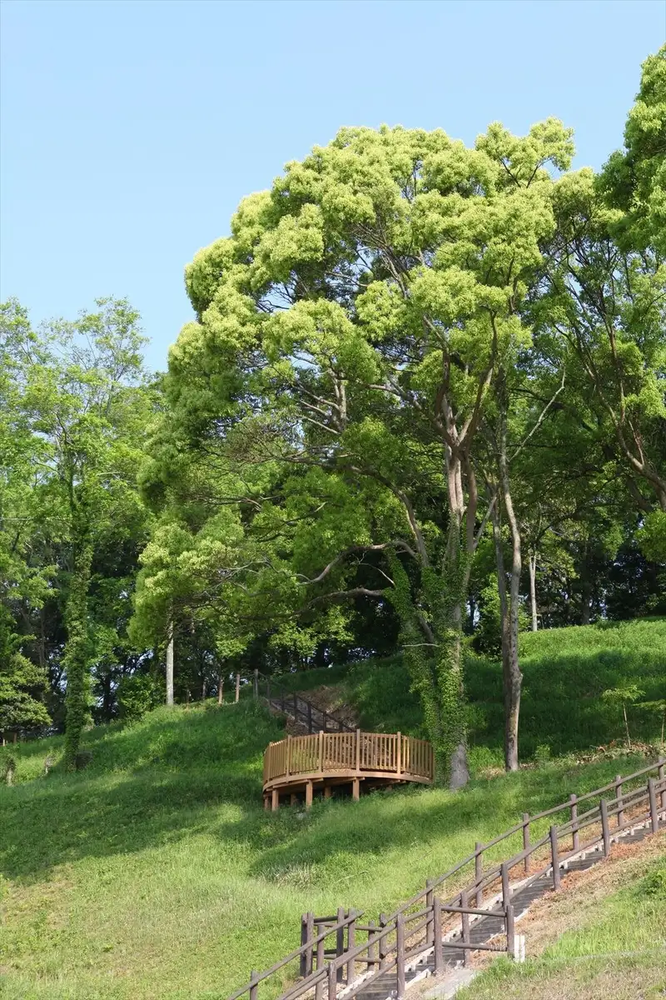
Stay
ビジネスホテル にしな
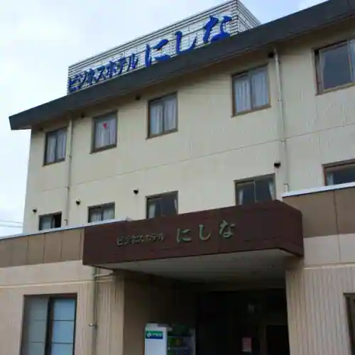
Business Hotel Nishina
Hotel in Satomi, Satosho with parking and business travelers; 5-minute drive from Kamogata IC.
Dining
ソルベーカリー
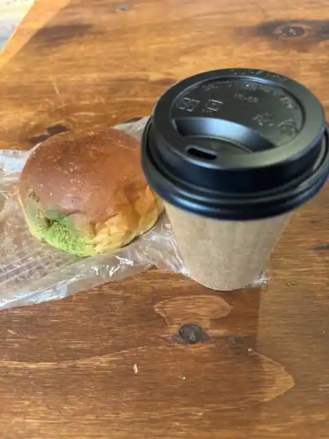
Soru Bakery
カフェ＆アウトレット カフェ・サンラヴィアン
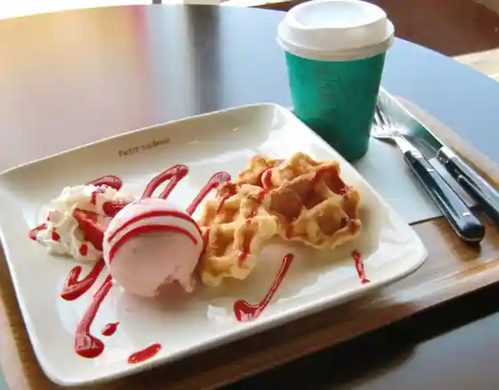
Cafe & Autoretto Cafe Sanravian
マカレ
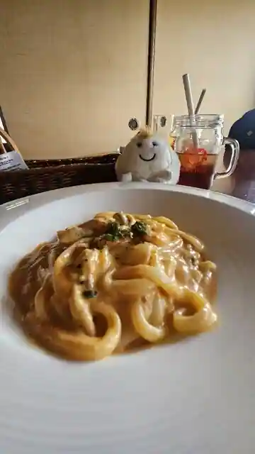
Makare
魚屋+台所 ななつや
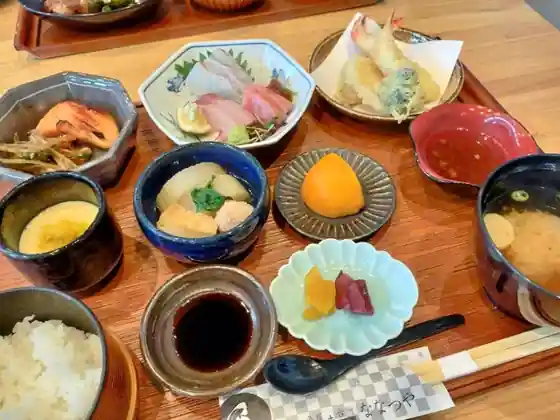
Sakanaya + Daidokoro Nanatsuya
活魚料理 魚専
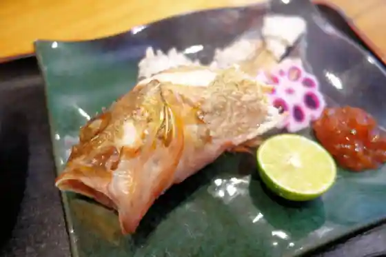
Ikeuo Ryori Sakana Sen
ヒミツキッチン かたつむり
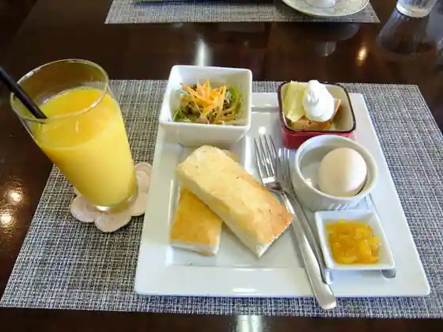
Himitsu Kitchen Katatsumuri
ラフィング ブッダ カフェ
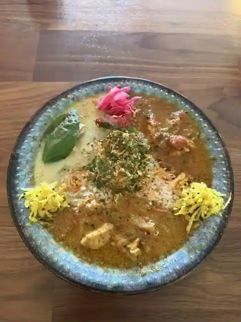
Rafingu Budda Cafe
菓匠将満 里庄店
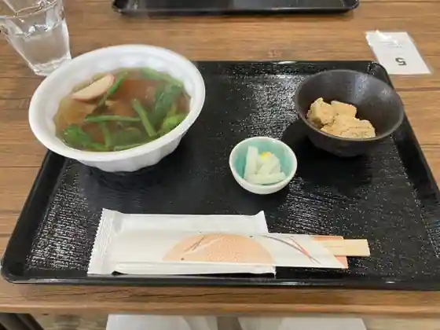
Kasho Sho Man Satosho
中華そば たなか
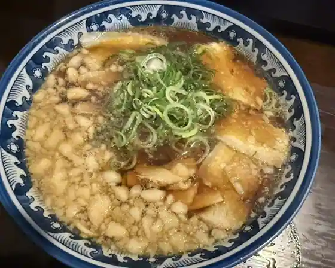
Chuka Soba Tanaka
ほんまもん 里庄店
Honmamon Satosho
鳥屋楓
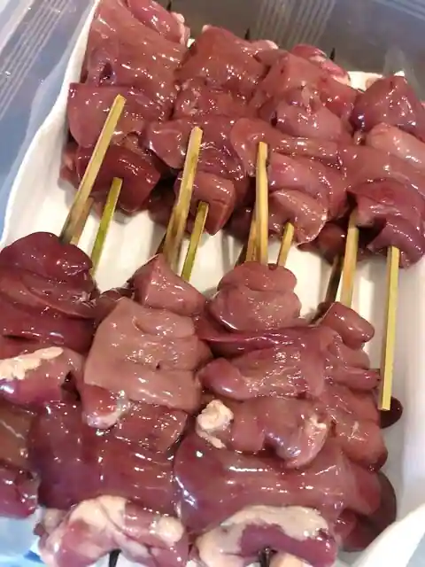
Toriya Momiji
Saino fqc cafe
Saino fqc cafe
masterwal COFFEE
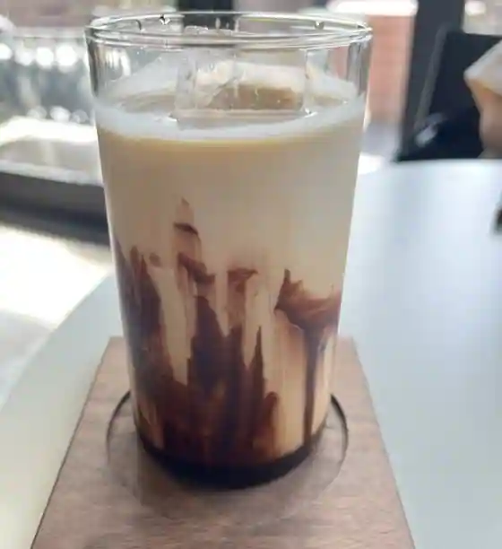
masterwal COFFEE
ルコックルージュ
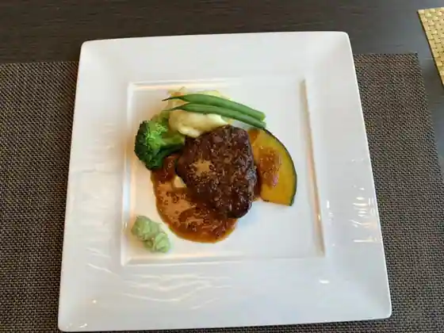
Rukokkuruju
古民家文庫 茂登田
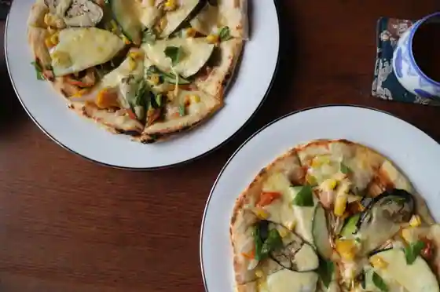
Ko Minka Bunko Moto Ta
台湾料理 四季旺
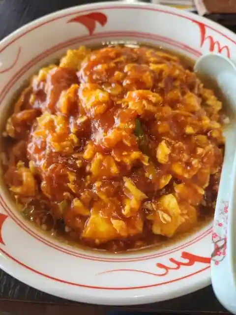
Taiwan Ryori Shiki O
本格インド料理 インディゴ
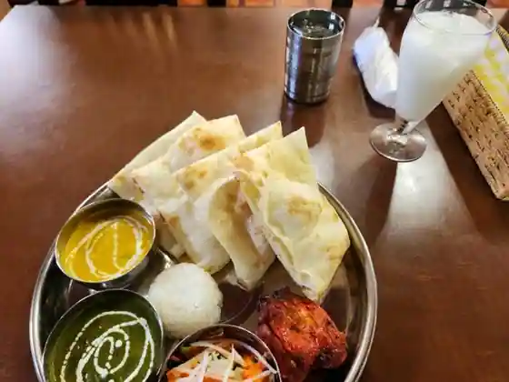
Honkaku Indo Ryori Indigo
福来朗
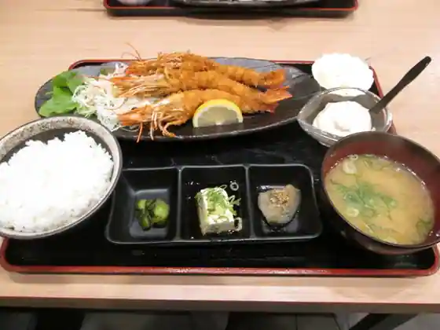
Fukurai Akira
チロル喫茶
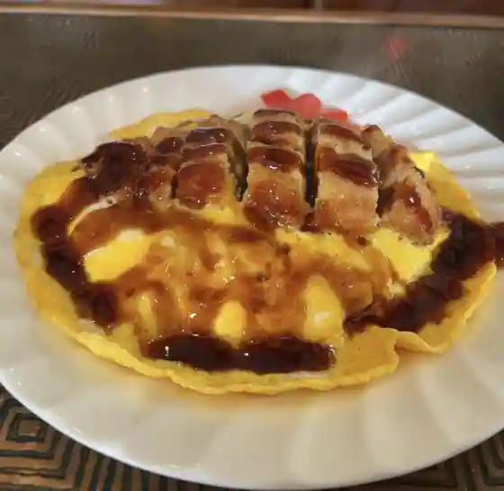
Chiroru Kissa
８番らーめん 里庄店
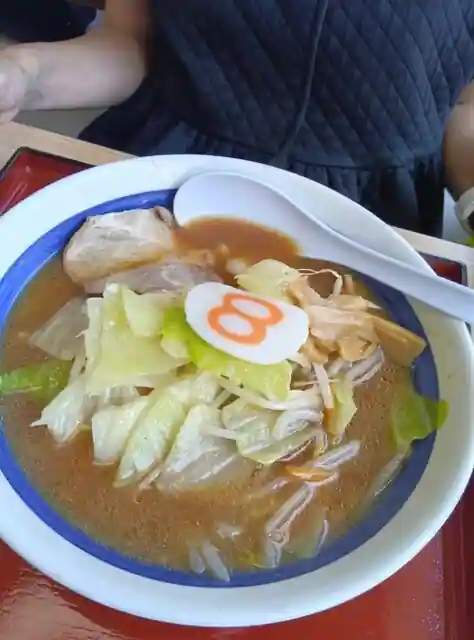
8 Ban Ramen Satosho
拉麺 山ちゃん
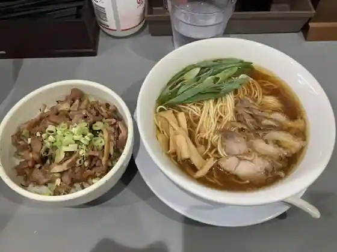
Ramen Yama Chan
たこ焼き あっちゃん
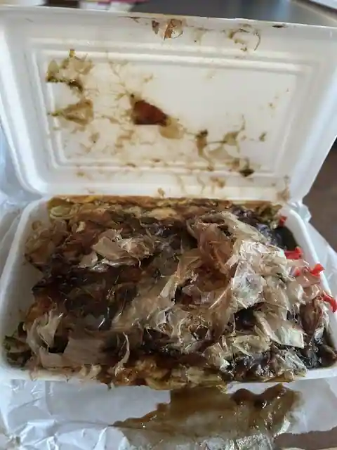
Tako Yaki Atchan
鳥周 里庄店
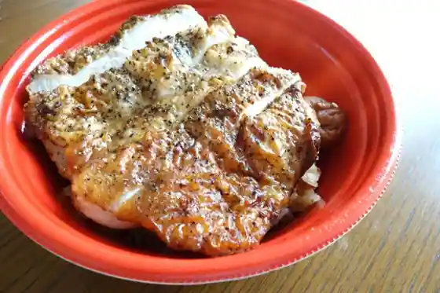
Tori Shu Satosho